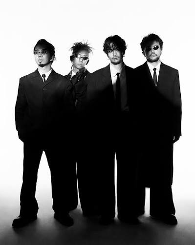
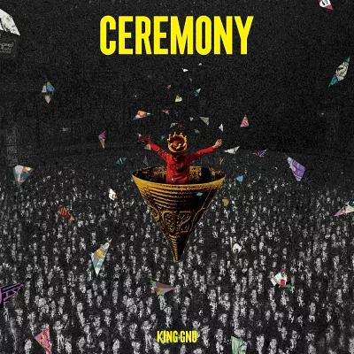
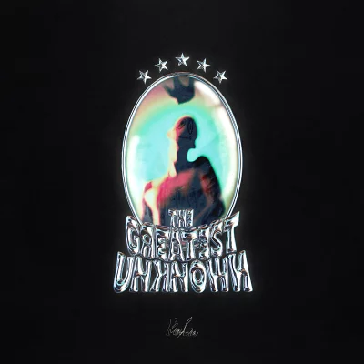

プロフィール
常田大希、勢喜遊、新井和輝、井口理による4ピースジャパニーズバンド。オルタナティブと独自のポップセンスが融合した音楽性と多種多様な作品群で賞賛を集め、音楽、アートワーク、映像、LIVEパフォーマンス全方位において唯一無二の世界を構築している。2019年1月にアルバム『Sympa』でメジャーシーンに踊りだし、2月には『白日』をリリースしスマッシュヒットを記録。2020年にはアルバム『CEREMONY』で50万枚超えのセールスを記録し、日本を代表するロックバンドへと成長。2023年にリリースしたアルバム『THE GREATEST UNKNOWN』をひっさげ、全国5大ドームツアーに続き、アジアツアーでは4都市7公演を敢行し、計40万人を動員した。さらに、2026年2月からはバンド史上最多都市を巡るツアー「King Gnu CEN+RAL Tour 2026」を開催中
おすすめアルバム

CEREMONY
2020

THE GREATEST UNKNOWN
2023
おすすめ曲
▶ SPECIALZ
3:58
▶ Prayer X
3:46
▶ Sorrows
4:12
私が好きな理由
他のアーティストにはない新鮮さと圧倒的なかっこよさがあり、曲ごとに異なる世界観を楽しめるところが好きです。ロックだけではなく、さまざまなジャンルを取り入れた音楽性にも魅力を感じています。